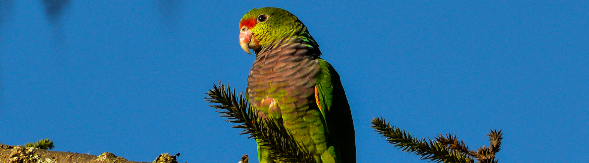
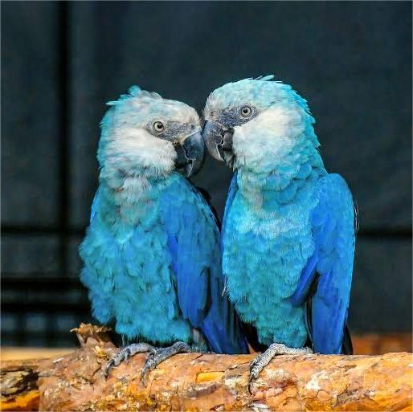
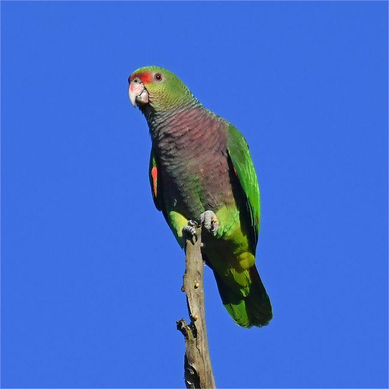
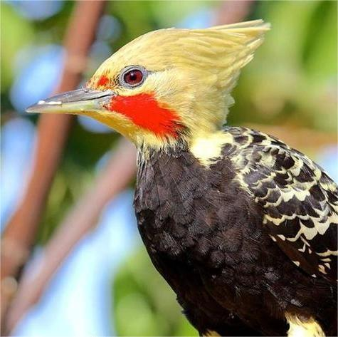

Ararinha-azul
Conhecida também como arara-azul-de-spix, esta espécie é nativa do Brasil e foi declarada extinta na natureza devido à caça e perda de habitat.
Esforços de reprodução em cativeiro estão em andamento para tentar reintroduzir a espécie no seu habitat original

Papagaio de peito roxo
O ICMBio afirma que, em mais de três décadas, houve um declínio populacional de 21%, fazendo com que seja classificada como vulnerável.
A espécie encontra-se ameaçada principalmente devido à caça de contrabando e à destruição de seu habitat.
Atualmente, estima-se que existam cerca de 3.042 indivíduos saudáveis em território brasileiro.
A ave também pode ser encontrada no Paraguai e na Argentina.

Pica Pau Amarelo
O pica-pau-amarelo (Celeus flavus) enfrenta ameaças à
sua sobrevivência devido à perda de habitat causada pela destruição de florestas e fragmentação dos ecossistemas.
Embora a UICN o classifique como "Pouco Preocupante" devido à sua ampla distribuição, em algumas regiões do Brasil,
como Espírito Santo, Minas Gerais e Bahia, ele está classificado como "Criticamente em Perigo" ou "Em Perigo". .